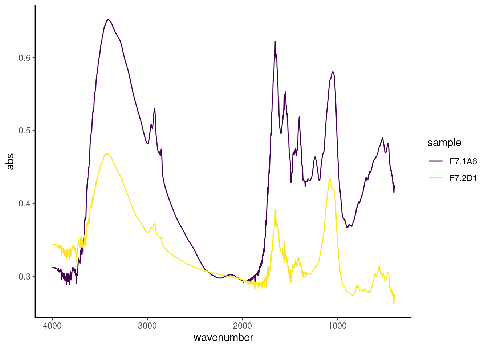
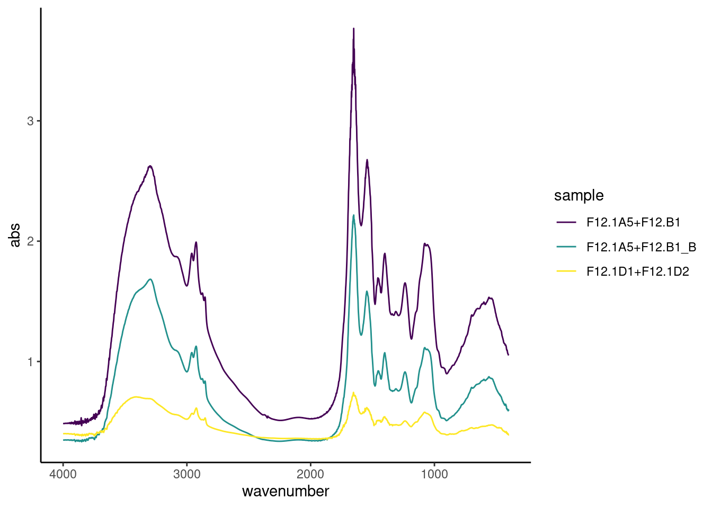
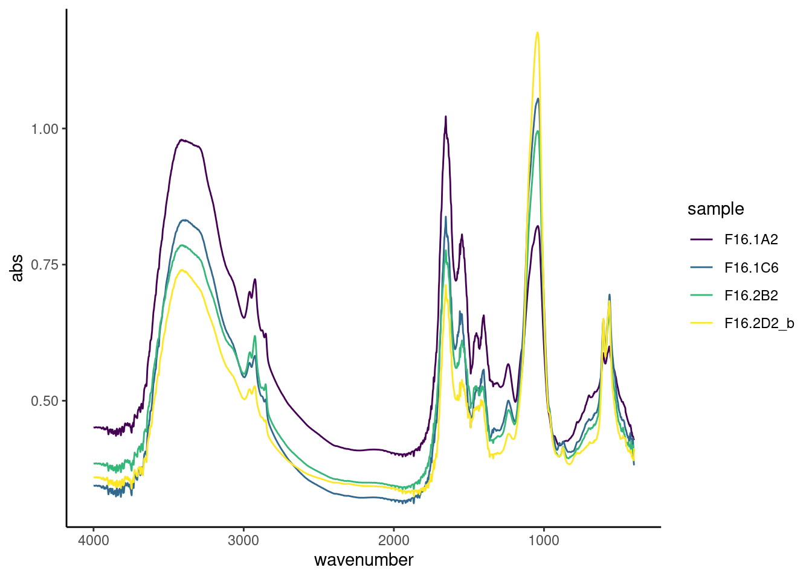
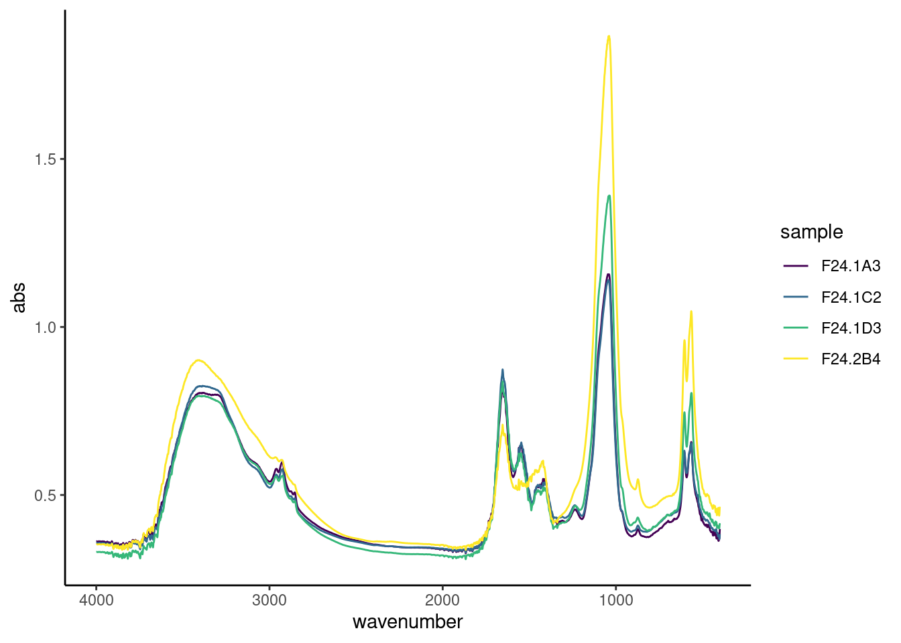

| Sample type | Sampling day | n |
|---|---|---|
| saliva | 0 | 1 |
| saliva | 3 | 1 |
| saliva | 5 | 1 |
| medium | 5 | 2 |
| medium | 7 | 2 |
| medium | 9 | 2 |
| medium | 12 | 2 |
| medium | 15 | 2 |
| medium | 18 | 2 |
| medium | 21 | 2 |
| medium | 24 | 2 |
| byoc_calculus | 24 | 16 |
Assessing the validity of a mineralised oral biofilm model as a suitable proxy for dental calculus
Bjørn Peare Bartholdy ![]()
Abstract
This is the abstract for the paper.
Introduction
Dental calculus is quickly becoming the go-to substance for exploring health and diet in past populations. Studies using archaeological dental calculus span a wide range of topics in different regions and time periods. These include characterisation of the oral microbiome and its evolution in past populations (Adler et al., 2013; Fellows Yates et al., 2021; Kazarina et al., 2021; Velsko et al., 2019; Warinner et al., 2014), extraction of microbotanical remains (Hardy et al., 2009; Henry & Piperno, 2008; Ma et al., 2022; Mickleburgh & Pagán-Jiménez, 2012) and other residues to infer dietary patterns and nicotine-use (Buckley et al., 2014; Eerkens et al., 2018; Hendy et al., 2018).
Dental calculus is formed by the mineralisation of dental plaque. Dental plaque is an oral biofilm and is part of the normal state of the oral cavity; however, if left unchecked, plaque can lead to infections such as dental caries and periodontitis (Marsh, 2006). Shortly after teeth are cleaned (whether mechanically or otherwise), a salivary pellicle adsorbs to the surface of the tooth, in most cases enamel, forming the acquired dental pellicle. The pellicle is comprised mainly of proteins and, in addition to protecting the tooth against mechanical and chemical decay, provides a viable surface for bacterial attachment (Yao et al., 2003). Shortly after adsorbing to the enamel, early-coloniser species, such as those within genus Streptococcus and Actinomyces, adhere to the pellicle through reversible long-range physicochemical forces and irreversible short range cell-host interactions (Marsh, 2006). Once the surface has been populated by the specialists in surface-attachment, other species of bacteria can attach to their surface through cell-cell interactions, allowing adhesion of species that are not otherwise capable of adhering to a surface. After accumulation and multiplication of bacteria, this, now, diverse community of is able to secrete polysaccharides, proteins, lipids, and nucleic acids, into their immediate environment to form a biofilm matrix (Flemming et al., 2016). The matrix provides an adaptive advantage to the organisms within through resistance to antibiotics and mechanical removal, as well as transporting nutrients from outside the biofilm and facilitating distribution of resources between bacterial communities within the biofilm (Jain et al., 2013; Peterson et al., 2015).
The composition of a biofilm matrix is largely water (around 90%), with the remaining content consisting of microbes, extracellular polysaccharides (EPS), DNA, RNA, and proteins (Berger et al., 2018). Biofilms can become susceptible to calcification under certain microenvironmental conditions. These include an increased concentration of salts and a decrease in statherin and proline-rich proteins in saliva, rises in local plaque pH, and increased hydrolysis of urea (White, 1997; Wong et al., 2002). Under these conditions, the biofilm environment becomes favourable to increased precipitation and decreased dissolution of calcium phosphate salts within saliva and the plaque biofilm. The resulting supersaturation of calcium phosphate salts are the main drivers of biofilm mineralisation (Jin & Yip, 2002). Mineralisation generally starts from within the biofilm matrix as a result of nucleation, followed by mineralisation of the matrix and, subsequently, bacterial cells. The susceptibility of crystallisation in bacteria depends on the composition and concentration of membrane-associated components, such as proteolipids and phospholipids (Jin & Yip, 2002; White, 1997). Binding of calcium to bacterial membranes is facilitated by phospholipid molecules within the cell membrane, followed by association of phosphates with the bound calcium to form calcium phosphate complexes. These complexes are active in promoting the formation and deposition of hydroxyapatite within biofilms (Jin & Yip, 2002).
The primary minerals in dental calculus are hydroxyapatite (HAP), octacalcium phosphate (OCP), whitlockite (WHT), and brushite (BHT). During initial mineralisation the main mineral component is BHT, which shifts to HAP in more mature dental calculus (Hayashizaki et al., 2008; Jin & Yip, 2002). The exact elemental composition of dental calculus varies by individual due to various factors, including diet (Hayashizaki et al., 2008; Ji et al., 2000).
The role of bacteria in dental calculus formation is still not clear, and dental calculus formation has been induced in bacteria-free rodents (Glas & Krasse, 1962). However, given the abundance of bacteria present within human dental plaque, the structure of calculus will reflect the presence of bacteria with human dental calculus containing a heterogenous mineral composition across the biofilm due to the differing mineralisation properties in bacteria, and also directly influences the porosity of calculus (Omelon et al., 2013; Rohanizadeh & LeGeros, 2005). The different susceptibility of certain bacteria to mineralise may explain differences in bacterial profiles in plaque and dental calculus (Velsko et al., 2019)
Attachment of dental calculus to enamel is further solidified by fusion of dental calculus with enamel rods (Rohanizadeh & LeGeros, 2005; White, 1997).
The organic component of dental calculus consists of proteins and lipids, likely incorporated from bacteria, saliva, and food (White, 1997). Calculus forming above the gumline (supragingival) has a lower inorganic content than calculus forming below the gumline (subgingival) (Jin & Yip, 2002).
Oral biofilm models are commonly used in dental research to assess the efficacy of certain treatments on dental pathogens (Exterkate et al., 2010; Filoche et al., 2007). These are often short-term models grown over a few days, but there also exist longer term models used to develop dental calculus (Middleton, 1965; Sissons et al., 1991; Wong et al., 2002). There are multiple different types of models ranging from simplistic agar plate or multiwell-plate models (Ceri et al., 1999; Exterkate et al., 2010), to more complex setups like the constant depth film fermenter (CDFF) (Peters & Wimpenny, 1988) and the multi-station artificial mouth (MAM) (Sissons et al., 1991). The more complex models have the benefit of a continuous flow of saliva or saliva-like medium and control over the environment, while the multiwell-plate models offer the advantage of generating more samples over the same amount of time (McBain, 2009). Simplistic models restricted to a select subset of oral bacteria are often more reproducible than models using whole saliva, while the latter are more representative of the in vivo oral microbiome complexity (McBain, 2009; Røder et al., 2016).
We present an oral biofilm model that can serve as a viable proxy for dental calculus, and provide a method for fundamental research on dental calculus in the past. The need for such a model is warranted by the different questions that are asked by archaeologists compared to clinical dentistry. We are interested in learning more about how dietary residues and microremains become trapped in calculus, and how the methods we use may inadvertently bias our interpretations; questions that are best addressed in a lab using a model. We used FTIR to verify the mineral composition, and metagenomic classification to characterise the bacterial composition, and compared our results against modern and archaeological human dental calculus. We found that the mineral and organic components mimic that of the modern reference calculus used for comparison, while the bacterial classification revealed a similar but distinct community structure. In addition to the benefit of increased control over parameters involved in calculus formation and dietary incorporation, our method also provides unlimited material for experimentation, rather than using the limited archaeological material currently available.
Materials and Methods
Biofilm growth
In this study we employ a multispecies oral biofilm model following a modified protocol from Sissons and colleagues (1991) and Shellis (1978). The setup comprises a polypropylene 24 deepwell PCR plate (KingFisher 97003510) with a lid containing 24 pegs (substrata), which is autoclaved at 120°C, 1 bar overpressure, for 20 mins.
The artificial saliva (AS) is a modified version of the basal medium mucin (BMM) described by Sissons and colleagues (1991). It is a complex medium containing 2.5 g/l partially purified mucin from porcine stomach (Type III, Sigma M1778), 5 g/l trypticase peptone (Roth 2363.1), 10 g/l proteose peptone (Oxoid LP0085), 5 g/l yeast extract (BD 211921), 2.5 g/l KCl, 0.35 g/l NaCl, 1.8 mmol/l CaCl2, 5.2 mmol/l Na2HPO4 (Sissons et al., 1991), 6.4 mmol/l NaHCO3 (Shellis, 1978), 2.5 mg/l haemin. This is subsequently adjusted to pH 7 with NaOH pellets and stirring, autoclaved (15 min, 120°C, 1 bar overpressure), and supplemented with 5.8 (mu)mol/l menadione, 5 mmol/l urea, and 1 mmol/l arginine (Sissons et al., 1991).
Fresh whole saliva (WS) for inoculation was provided by a 31-year-old male donor with no history of caries, who abstained from oral hygiene for 24 hours, and no food was consumed two hours prior to donation. No antibiotics were taken up to six months prior to donation. The saliva was filtered through a sterilised (with bleach) nylon cloth to remove particulates. Substrata were inoculated with 1 ml/well of a two-fold dilution of WS in sterilised 20% glycerine for four hours at 36°C, to allow attachment of the salivary pellicle and plaque-forming bacteria. After initial inoculation, the substrata were transferred to a new plate containing 1 ml/well AS and incubated at 36°C, 30 rpm. The inoculation process was repeated on days 3 and 5. AS was partially refreshed once per day and fully refreshed every three days, throughout the experiment, by transferring the substrata to a new plate containing AS. To feed the bacteria, the substrata were transferred to a new plate, containing 5% (w/v) sucrose, for six minutes twice daily, except on inoculation days (days 0, 3, and 5), where the samples only received one sucrose treatment after inoculation.
Starch treatments were initiated on day 9 to avoid starch granule counts being affected by \(alpha\)-amylase hydrolysis from inoculation saliva. An \(\alpha\)-amylase assay confirmed the absence of any \(\alpha\)-amylase activity in the system (Bartholdy & Henry, 2022). Starch treatments replaced sucrose treatments, occurring twice per day for six minutes. The starch treatments involved transferring the substrata to a new plate containing a 0.25% (w/v) starch from potato (Roth 9441.1) solution, a 0.25% (w/v) starch from wheat (Sigma S5127) solution, and a 0.5% (w/v) mixture of equal concentrations (w/v) wheat and potato. All starch solutions were created in a 5% (w/v) sucrose solution. Before transferring biofilm samples to the starch treatments, the starch plates were agitated to keep the starches in suspension in the solutions, and during treatments, the rpm was increased to 60.
After 15 days, mineralisation was encouraged with a calcium phosphate monofluorophosphate urea (CPMU) solution containing 20 mmol/l CaCl2, 12 mmol/l NaH2PO4, 5 mmol/l Na2PO3F, 500 mmol/l Urea (Pearce & Sissons, 1987; Sissons et al., 1991), and (0.04 g/l MgCl). The substrata were submerged in 1 ml/well CPMU five times daily, every two hours, for six minutes. During the mineralisation period, starch treatments were reduced to once per day after the five CPMU treatments. This cycle was repeated for 10 days until the end of the experiment on day 24 (see @ref(fig:protocol-fig) for an overview of protocol). A more detailed protocol is available at.
All laboratory work was conducted in sterile conditions under a laminar flow hood to prevent starch and bacterial contamination. Control samples were included to detect starch contamination.
Metagenomics
A total of 35 samples were taken during the experiment from the donated saliva, artificial saliva, and from the biofilm end-product on day 24. DNA extraction was performed at the archaeogenetic facility at the Max Planck Institute for the Science of Human History (Jena, Germany). Extractions were performed in duplicates. A total of DNA extracts.
DNeasy PowerSoil Kit from QIAGEN. C2 inhibitor removal step skipped, going directly to C3 step.
were paired-end sequenced on a NextSeq (2 color chemistry) to 150bp
Preprocessing
Processing of the raw DNA reads was conducted using the nf-core/eager, v2.4.4 pipeline (Fellows Yates et al., 2020). Adapter removal and read merging was performed using AdapterRemoval, v2.3.2 (Schubert et al., 2016). Merged reads were mapped to the human reference genome (GRCh38 ) using BWA, v0.7.17-r1188 (Li & Durbin, 2009) with default settings (-n 0.01; -l 32), and unmapped reads were extracted using Samtools, v1.12.
Metagenomic classification was conducted in kraken, v2.1.2 using the Standard database (Wood et al., 2019).
Environmental reference samples were downloaded from ENA and using SRA Toolkit. Oral reference samples were downloaded from the Human Metagenome Project (HMP), and modern calculus samples from Velsko et al. (2017) Only paired reads were processed, singletons were removed. Biofilm model samples from Edlund et al. (2018) were used as a reference. Links to the specific sequences, including human-filtered reads from this study, are included in the metadata.
Authentication
Species with lower than 0.001% relative abundance were removed. SourceTracker (Knights et al., 2011) was used to estimate source composition of the oral biofilm model samples using a Bayesian framework. Sampes were compared with oral and environmental controls to detect potential external contamination. The R package decontam v1.16.0 (Davis et al., 2018) was used to identify potential contaminants using DNA concentrations with a probability threshold of 0.95 and negative controls with a probability threshold of 0.05. Putative contaminants were filtered out of the OTU tables for all downstream analyses. Authentication methods are described in more detail in the Supplementary material.
Community composition
Relative abundances of communities were calculated at the species- and genus-level, as recommended for compositional data (Gloor et al., 2017). Shannon index calculated on species OTU tables of all artificial and oral reference samples using the vegan 2.6.2 R package (Oksanen et al., 2022). Sparse principal components analysis (sPCA) was performed on model biofilm samples to … and a separate sPCA analysis was performed on biofilm model end-products and oral reference samples using the mixOmics R package 6.20.0 (Rohart et al., 2017).
Differential abundance
FTIR
To determine the mineral composition and level of crystallisation of the model dental calculus samples, we used Fourier Transform Infrared (FTIR) spectroscopy. We compared the spectra of model dental calculus with spectra archaeological dental calculus and used a built-in Omnic search library for mineral identification (Weiner, 2010a). The archaeological sample was dental calculus from an isolated tooth from Middenbeemster, a rural, 19th century Dutch site. Samples were analysed at the Laboratory for Sedimentary Archaeology, Haifa University. The analysis was conducted with a Thermo Nicolet is5 spectrometer in transmission, at 4 cm\(^{-1}\) resolution, with an average of 32 scans between wavenumbers 4000 and 400 cm\(^{-1}\).
Analysis was conducted on 28 biofilm samples from days 7, 12, 16, 20, and 24. Some samples from the same sampling day had to be combined to provide enough material for analysis. Samples analysed for FTIR originated from a different experiment than the metagenomic samples, following the same protocol (as described above). Samples were analysed following the method presented in Asscher, Regev, et al. (2011). A few \(\mu\)g of each sample were repeatedly ground together with KBr and pressed in a 7 mm die under two tons of pressure using a Specac mini-pellet press (Specac Ltd., GS01152). Repeated measurements of the splitting factor were taken after each grind, and a grind curve was produced following Asscher, Regev, et al. (2011). Samples were ground and analysed up to six times (sample suffix a-f) for the grinding curve. Grinding curves were prepared for samples from days 16, 20, and 24. No grind curves were produced for samples from days 7 and 12. These were largely composed of organics and proteins, and did not form enough carbonated hydroxtapatite for analysis. The splitting factor of carbonate hydroxyapatite was calculated using a macro script, following Weiner & Bar-Yosef (1990), by dividing the sum of the height of the absorptions at 603 cm\(^{-1}\) and 567 cm\(^{-1}\) in the height of the valley between them. Following Asscher, Regev, et al. (2011) we plotted the IRSF against the full width at half maximum (FWHM) of the main absorption at 1035, and compared our grinding curves to the ones produced by Asscher, Regev, et al. (2011).
Splitting factors of the doublet, and FWHM of the main PO4 peak at 1040 were calculated from the grinding measurements, and plotted against each other to create grinding curves to explore crystallinity (crystal size) and the order and disorder. Disorder is a steep slope and large FWHM.
Statistics
Statistical analysis was conducted in R Statistical Software R version 4.2.0 (2022-04-22) (Vigorous Calisthenics) (R Core Team, 2020). Data cleaning and wrangling performed with packages from tidyverse (Hadley Wickham et al., 2019). Plots were created using ggplot2 (H. Wickham, 2016).
Results
Metagenomic analysis
Sample authentication
The sources of taxa were estimated using SourceTracker2 (Knights et al., 2011). The results suggest that the majority of taxa across samples have an oral microbial signature. SourceTracker2 results were compared to a database of oral taxa (Fellows Yates et al., 2021) to prevent removal of samples where oral taxa were assigned to a non-oral source, as some similar taxa with a signature from multiple sources are often classified as “Unknown” (Velsko et al., 2019). A few samples suspected of containing a large proportion of contamination were removed (SYN015.F0101,SYN015.G0101,SYN015.H0101,SYN017.F0101,SYN017.G0101,SYN018.H0101,SYN013.I0101,SYN016.I0101). The removed samples were predominantly medium samples from later in the experiment, and a few model calculus samples (see Supp mat).
Decrease in community diversity across experiment

After contamination removal, samples consisted of 88 and 284 with a mean of 181.59. We used the Shannon Index to assess the species diversity and richness in our samples over the course of the experiment. Samples were grouped into sampling categories due to low sample sizes on sampling days (inoc = days 0, 3, 5; treatm = days 7, 9, 12, 15; final = day 24). There was a slight decrease in mean alpha diversity between inoculation (M = 2.1458561, sd = 0.8082455) and treatment and final samples (M = 1.7752494, 0.5678242; 1.8578819, 0.260961), as well as a decrease in variance within samples types (Figure 1). Based on the similarity of distribution between Pielou’s Species Evenness and the Shannon index, the main driver of differences is likely the species richness (Supp. Mat).
Medium and model calculus samples are distinct from the inoculate


The species profiles of the saliva inoculate used in our experiment were distinct from both medium and model calculus samples. Most of the separation is on PC1 of the sPCA, with minimal separation on PC2. Most of the model calculus samples also cluster separately from the medium samples on PC2, but maintaining some overlap with more mature medium samples. The largest negative loadings on PC1, separating inoculate from other samples, are an abundance of aerobes and facultative anaerobes in the inoculate, especially Rothia and Neisseria spp. Conversely, positive loadings consist mainly of anaerobes, especially Selenomonas spp.

Species enriched in saliva compared to model calculus are largely aerobic or facultative anaerobic, while species enriched in model calculus compared to saliva are mainly anaerobes. Compared to saliva, species differences between medium and model calculus are less pronounced Figure 2.
Lower diversity in artificial samples than oral references

Again, the Shannon Index was used to evaluate alpha diversity, this time across model samples and oral reference samples. Model samples (M = 1.86, M = 1.74, M = 1.69) were consistently lower than oral reference samples (M = 2.74, M = 3.14, M = 3.02, M = 3.53, M = 3.04) in species richness and diversity. The Pielou Species Evenness has a similar distribution, although the comparative biofilm samples have a higher mean than biofilm samples from this study (Supp. Mat.).
Model calculus is distinct from dental calculus and other oral samples

The main overlap between the model calculus and oral comparative samples are the high relative abundance of Streptococcus. Model calculus consists mostly of Enterococcus and Veillonella spp., while oral comparative samples are more diverse (consistent with the Shannon Index).


Model calculus samples are distinct from both the oral reference samples and the biofilm model reference samples. They are separated from oral reference samples mainly on PC1, and from biofilm model reference samples (and, to some extent, oral samples) on PC2. The highest negative contributions are a mix of all types of aerotolerance, while the positive contributions are mostly (facultative) anaerobes, with Enterococcus spp. as the top three positive contributors to PC1. Top negative contributors are Capnocytophaga spp as well as the aerobes Corynebacterium matruchotii and Rothia dentocariosa. The top positive contributors to PC2 are all anaerobes, mainly from the genus Selenomonas. Top negative contributors to PC2 are a mix of aerotolerances, with many Streptococcus spp.

Based on the differential abundance analysis on the top loadings from PC1, the main differences between model calculus and oral reference samples, are that the oral reference samples are enriched with species with a diverse oxygen tolerance from a wide range of genera, while the model calculus is enriched with Enterococcus spp. The largest differences occur in Corynebacterium matruchotii, Rothia dentocariosa, and Capnocytophaga gingivalis (Figure 5A). This is echoed in the differential abundance analysis on top loadings from PC2, where most of the species are enriched in model calculus, all of which are anaerobes, and the largest differences occurring in Cryptobacterium curtum, Eggerthella lenta, and Mogibacterium diversum (Figure 5B).
Increasing mineralisation over the course of the experiment




Day 7 spectra have large O–H and amide A absorbance bands in stretching mode around 3400 cm\(^{-1}\), as well as three marked CH3 and CH\(_2\) stretching vibrations at 2960, 2920, and 2850 cm\(^{-1}\). There is a clear amide I peak at 1650 and a less pronounced amide II peak at 1545 cm\(^{-1}\). In the ‘fingerprint’ region, C–O\(_3^{2-}\) at 1450 and 1400 absorbance bands corresponding to the v3 asymmetric stretching vibrations, P–O4 absorbance band corresponding to the v3 asymmetric stretching vibrations at 1080 cm\(^{-1}\), and minor phosphate absorption bands around 500 cm\(^{-1}\) in sample F7.1A6, but absent in sample F7.2D1. The absorption bands at 1080 cm\(^{-1}\), and 1040-1047 cm\(^{-1}\) and minor bending absorption bands of the phosphate doublet around 605 cm\(^{-1}\) and 560 cm\(^{-1}\) in sample F7.2D1, but absent in sample F7.1A6. The relative absorbance of O–H and Amide I and II bands are higher than the phosphate bands, representing a relatively higher content of lipids and proteins than inorganic content. Large variation between spectra.
Day 12, amide I and II continue to be the dominant peaks, and a higher ratio of both amide and O–H to PO4 v3 absorbance bands. Three marked CH3 and CH\(_2\) stretching vibrations at 2960, 2920, and 2850 cm\(^{-1}\). Reduced variation between two of the three spectra.
Day 16, the ratio of O–H and amides to PO4 has shifted, with the main peak shifting to the PO4 v3 absorbance band at 1040 (except in sample F16.1A2). A well-defined PO4 doublet at 600 and 560 is present. Small CO\(_3^{2-}\) asymmetric stretching at 1450 cm\(^{-1}\) and 1415 cm\(^{-1}\), and stretching vibrations at 875-870 cm\(^{-1}\). Decreased variability between the spectra, with most spectra exhibiting a higher phosphate-to-protein/lipid ratio.
Day 24, large O–H and amide A absorbance bands in stretching mode around 3400 cm\(^{-1}\), as well as three minor CH3 and CH\(_2\) stretching vibrations at 2960, 2920, and 2850 cm\(^{-1}\). Main peak of spectra is PO4 v3 at 1040 cm\(^{-1}\), well-defined PO4 doublet at 600-550 cm\(^{-1}\). Amide I band, with small amide II and III bands. Carbonate peaks also present. Very little variation between all of the spectra.

The archaeological and modern reference spectra are largely indistinguishable and consist of an O–H absorbance band (3400 cm\(^{-1}\)), CH3 bands (3000–2900 cm\(^{-1}\)), carbonate (1420, 1458-1450, 875-870 cm\(^{-1}\)), amide I band (1650 cm\(^{-1}\)), and phosphates (1040, 604, 566 cm\(^{-1}\)). The model calculus samples from the end of the experiment are similar to both reference samples. The main difference is a lower organic component in reference samples seen as a reduced amide I peak at around 1637 compared to the carbonate peak at around 1420, and an absence of amide II and III. Also a reduction in CH3 bands at 3000-2900 cm\(^{-1}\).
Similar crystallinity and order compared to reference calculus

Samples were compared to the results of Asscher, Regev, et al. (2011) and Asscher, Weiner, et al. (2011), and the slopes of the trend lines for our model calculus are similar to those of fresh bone and dentin. No appreciable differences between days 16, 20, and 24. The archaeological dental calculus does show a slightly increased slope compared to model calculus from the three sampling days used in the grind curve.
Discussion
In this study we present a [long-term] oral biofilm model with mineralisation to produce artificial dental calculus. Our proposed use of the model is to address a variety of research questions related to dietary information extracted from dental calculus, in both modern and ancient samples. For that to be feasible, the model needs to act as a viable proxy to dental calculus grown under natural conditions, i.e., in the human mouth. It needs, as much as possible, to mimic the diversity and complexity of the natural oral microbiome, while also offering control over factors such as dietary input, growth conditions, and replicability within and between experiments. Here, we assessed the viability of our model as a proxy for dental calculus using metagenomic classification and FTIR analysis to explore the bacterial and mineral composition, and compare with oral reference samples.
Microbiome
There is a loss of diversity from donated saliva to model calculus, and when compared to oral reference samples, which is a common limitation in biofilm models (Bjarnsholt et al., 2013; Edlund et al., 2013). The donated saliva for the experiment had a lower diversity than the reference saliva samples, and may have contributed to a lower diversity in experiment samples. Consequently, there is also a lower diversity and richness when compared to other modern oral reference samples, including oral mucosa, saliva, plaque, and calculus. Model calculus samples primarily consist of species within the genera Veillonella and Enterococcus, with more limited contributions from Streptococcus and Prevotella. The core microbiomes of oral reference samples have similar levels of streptococci, but a much more even distribution of species from Actinomyces, Capnocytophaga, Fusobacterium, and more.
Medium samples from early in the experiment have similar species profiles to the donated saliva, but gradually diverge over the course of the experiment, as seen in the increasing separation of samples on PC1 in Figure. This may be caused by the growth conditions provided by the experimental setup, which may not sufficiently mimic the oral environment, allowing different oral species to thrive that do not normally thrive in the natural oral environment. Especially Enterococcus spp. seemed to thrive later in the experiment, at the expense of more fastidious species like Capnocytophaga and Neisseria spp., which require an atmosphere with at least 5% carbon dioxide to thrive, so the model may have a low carbon dioxide atmosphere (Tønjum & van Putten, 2017). Early colonisers, including the aforementioned Capnocytophaga and Neisseria spp., as well as Actinomyces, were dominant in oral reference samples and deficient in model calculus samples, as well as the comparative in vitro model. Not only is there a decreased species diversity between model and reference samples, but also a loss of diversity in aerotolerance. Of the dominant species in the model, most are either anaerobes or facultative anaerobes, predominantly Gram-negative Veillonella and Prevotella, and Gram-positive Enterococcus. Species within predominantly aerobic genera, such as Neisseria, Rothia, and Ottowia, are deficient in the model compared to the donated saliva and other oral samples, suggesting a shift from a largely aerotolerant profile to an anaerobic profile during the experiment. While our model is not set up as an anaerobic system, the anaerobes seem to have outcompeted aerobes and, to some extent, facultative anaerobes. This is likely a result of communities of bacteria within the biofilm creating favourable microenvironments facilitated by the protective properties of the biofilm matrix (Edlund et al., 2018; Flemming et al., 2016). Capnocytophaga and Actinomyces spp. are predominantly (facultative) anaerobes, so their deficiency must be attributed to different reasons. The highest log-fold changes between model calculus and other samples were seen in E. faecalis, E. durans, and E. casseliflavus, and contributed most to the unique clustering of model calculus on PC1. E. faecalis was also abundant in the comparative in vitro biofilm study. Enterococcus spp. out-competing other species may be a problem in model biofilm studies, but more comparative studies are needed to confirm (and there are limited WGS studies to use as a comparison).
Model calculus and the modern reference calculus clustered separately in the sPCA analysis. This may be due to human variation, as there can be large differences in the oral microbiome of two individuals, and modern reference samples were taken from the same geographical origin (as was the donor saliva for the model, which was taken from a different geographical origin). One of the main drivers of differences in species profiles has been previously shown to be individual variation, even more so than pathological condition (Velsko et al., 2022). Whether or not distinct microbial profiles will affect the retention of dietary incorporation remains to be seen, and likely depends on the role bacteria play in the incorporation and retention of dietary compounds and microremains within a biofilm. Samples within the experiment were quite consistent allowing this to be explored further.
Species related to caries, such as Steptococcus mutans and members of the Lactobacillus genus, were deficient in both model calculus samples and oral reference samples. Both are integral in creating an acidic environment that favours demineralisation and inhibits mineralisation, so there absence is expected in a calculus model (Edlund et al., 2013; Velsko et al., 2019). The abundance of Veillonella and Prevotella spp. could suggest a pathogenic potential within the model biofilm, as these are commonly reported as opportunistic or accessory pathogens in periodontal disease (Tett et al., 2021; Zhou et al., 2021).
Mineralisation
FTIR analysis allowed us to address the mineralisation process of the model. The results showed an increasing mineral composition over the course of the experiment as the model biofilm matured. Samples taken early in the experiment, on day 7 and 12, had a high lipid and protein content consistent with the presence of microbial DNA and RNA within a matrix of extracellular polysaccharides (Jain et al., 2013). The high water content, indicated by the O–H stretch, is also consistent with a biofilm, which is around 90% water (Berger et al., 2018). As the samples mature over the course of the experiment, the ratio of proteins and lipids to phosphates shift from predominance of organic content to inorganic content in the form of carbonated hydroxyapatite.
The artificial samples from day 24 are consistent with spectra of carbonated hydroxyapatite and resemble both the modern reference samples and the archaeological sample in mineral composition and crystallinity. The steeper slope in the grind curve plots of the archaeological sample may suggest that the crystals in archaeological samples are larger than in the model calculus Figure 7. A possible explanation is that the inorganic crystals within archaeological calculus have had more time to expand into the space left by degraded organic matter (Weiner, 2010b). It may also have been an unusually crystallised sample; as we only analysed a single archaeological sample, and more modern and archaeological samples are needed to see if the high level of crystallinity is consistent in archaeological calculus, and if the level of crystallinity of the model calulus is more comparable to modern reference samples. The grinding curves for days 16, 20, and 24 were very similar, suggesting that the CPMU solution, which is introduced on day 16 to promote mineralisation, may not have much of an effect.
Although there were differences in species profiles between modern and model calculus, the mineral composition of the end results were similar, reinforcing the idea that, under the right circumstances, most bacteria will mineralise (Moorer et al., 1993). Even occurring without one of the most well-known biomineraliser, Corynebacterium matruchotii, which was deficient in model, and was the strongest discriminator of oral samples from model samples. It may also suggest that, while bacteria are integral in the formation of dental calculus, and inevitably serve as part of the structure that dental calculus is built upon (Rohanizadeh & LeGeros, 2005), the species composition of the biofilm communities may be less important. And that mineralisation may largely be a chemical process (catalysed by biological factors) (Omelon et al., 2013).
Replicability
The model calculus displayed similar species diversity and richness indices across all samples, indicating a high level of replicability between samples in the experimental run, despite larger variation between medium samples. Both sPCA analyses conducted with experiment only samples and with oral reference samples also cluster model calculus closely together. It remains to be seen whether the replicability within the experiment also scales up to between-experiment replicability. The variation in mineral composition was initially high in early model biofilm samples from days 7 and 12, but starting day 16 the variation decreased, and continued to decrease until day 24. The model calculus samples from day 24 were largely similar in composition as observed in the FTIR spectra. The use of a simple multiwell plate setup allows us to [submit] many samples to the same conditions which promotes replicability between samples. While the experimental conditions, including the dietary input, are kept constant, and the mineral and bacterial profiles are similar between samples, there is still a relatively large variation in starch retention in the model calculus (Bartholdy & Henry, 2022).
There are many biofilm models to choose from, so developing a new protocol may seem counter-productive; however, few are developed for long-term growth and even fewer for mineralisation. One of the exceptions involves a complex setup that is likely unfeasible to most archaeological research (Sissons et al., 1991). Our model uses a simplified high-throughput setup more commonly seen in shorter-term biofilm models that mainly focus on dental plaque (Exterkate et al., 2010; Tian et al., 2010). As shown in a previous study, calculus and plaque have distinct microbial profiles (Velsko et al., 2019), so their applicability to explore archaeological questions on dental calculus are limited. Clinical studies are also largely focused on short-term effects of anti-microbial treatments and inhibition of biofilm formation, while archaeologists are more interested in questions related to … Questions, we believe, can to some extent be answered using an oral biofilm model. Our previous work has shown that, like dental calculus, the model calculus is able to trap and retain dietary starches, admittedly with some variability between samples (Bartholdy & Henry, 2022).
Limitations
A well-known limitation of biofilm models is the difficulty in capturing the diversity and complexity of the natural oral biome. Diversity and complexity may be represented as interspecies communities and complex metabolic dependencies between organisms within the communitues, or as an environmental complexity determined by nutrient availability, host immune-responses to biofilms, and fluctuating microenvironments across the biofilm in response to these factors (Bjarnsholt et al., 2013; Edlund et al., 2018). Our single-donor approach may have affected diversity of model. The donated saliva had a lower mean alpha-diversity than other saliva samples. Although benefit of single donor means maintaining the integrity of the original bacterial community. There are benefits and trade-offs for both pooled and single-donor saliva (Edlund et al., 2013).
Research relating to \(alpha\)-amylase activity and its effect on the oral biome (whether dietary or otherwise) will require addition of amylase to the model during the experiment, as it is not present naturally in our current setup (as shown in Bartholdy & Henry (2022)). Our model has no renewable source for \(alpha\)-amylase once the inoculations have been completed. There are streptococci present in the model, which are known for their ability to bind amylase (Nikitkova et al., 2013); however, it is unclear whether the correct strains are present in our model, and if they are, why they are not binding \(alpha\)-amylase provided by the saliva inoculate. This could be due to the frequency of medium replacement potentially clearing out all of the unbound amylase every time medium is replaced. Our current model does not contain serum, which may be contributing to the deficiency of slow-growing fastidious organisms (Tian et al., 2010).
Biofilms were grown in a standard shaking incubator, rather than a incubator specific to cell cultures. The lack of complex environmental control may cause the model to deviate from its natural growth over the 24 days that the experiment is run, due to a lack of precise control over physiological conditions.
There is also a possibility of contamination in the model. While the CPMU solution was prepared under sterile conditions, the solution itself was not autoclaved, and may have been a source of contamination. This is further … by the fact that none of the medium samples taken after the introduction of CPMU (day 14) made it past authentication in the metagenomic analysis, and that a large portion of the sources of many samples were estimated to be from indoor air and surface samples .
Another limitation involves the information on aerotolerance of the identified species. Species-level aerotolerance was collected from BacDive and, at the time of writing, 55.9% species were missing aerotolerance values. This was mitigated by aggregating genus-level tolerances to missing species, and may have some errors (although unlikely to make any significant changes).
Future work
Our goals for additional validation measures involve functional profiles of bacterial, to see if metabolic behaviour of bacteria is consistent with in vivo conditions, and whether this is affected by the presence/absence of amylase. Further protocol optimisation will also be necessary to address some of the limitations of our current model. We may need to reduce the frequency of medium replacement (currently every three days) to help promote the growth of slower growing organisms and limit generalists such as enterococci. More infrequent medium replacement would facilitate slow-growing bacteria in establishing their metabolic relationships, allowing the byproducts of some species to become abundant enough for others that depend on these to grow (Marsh, 2005). Finally, if the within-experiment replicability is also present between experiments. An important question to address is what role bacteria play in the incorporation and retention of dietary microremains, and whether differing bacterial profiles affects the dietary incorporation and retention within the biofilm. Regardless, the apparent replicability of our current setup is a promising result.
The calculus model we have presented has many potential benefits within archaeological research. It can be used to test many fundamental assumptions we have about the process of inclusion and subsequent extraction of various information about health and diet from archaeological dental calculus. How our current methods for exploring diet and health may be biased. How different methods of food processing in the past may reflect the picture we get from the samples we analyse. This method can be used for a wide range of methods-testing (e.g. DNA, proteomics, etc.) as well as training for various sampling methods, and testing decontamination protocols, without using up limited supplies of archaeological resources.
References
Adler, C. J., Dobney, K., Weyrich, L. S., Kaidonis, J., Walker, A. W., Haak, W., Bradshaw, C. J., Townsend, G., Soltysiak, A., Alt, K. W., Parkhill, J., & Cooper, A. (2013). Sequencing ancient calcified dental plaque shows changes in oral microbiota with dietary shifts of the Neolithic and Industrial revolutions. Nature Genetics, 45(4), 450–455, 455e1. https://doi.org/10.1038/ng.2536
Asscher, Y., Regev, L., Weiner, S., & Boaretto, E. (2011). Atomic Disorder in Fossil Tooth and Bone Mineral: An FTIR Study Using the Grinding Curve Method. ArcheoSciences. Revue d’archéométrie, 35, 35, 135–141. https://doi.org/10.4000/archeosciences.3062
Asscher, Y., Weiner, S., & Boaretto, E. (2011). Variations in Atomic Disorder in Biogenic Carbonate Hydroxyapatite Using the Infrared Spectrum Grinding Curve Method. Advanced Functional Materials, 21(17), 3308–3313. https://doi.org/10.1002/adfm.201100266
Bartholdy, B. P., & Henry, A. G. (2022). Investigating Biases Associated With Dietary Starch Incorporation and Retention With an Oral Biofilm Model. Frontiers in Earth Science, 10. https://www.frontiersin.org/articles/10.3389/feart.2022.886512
Berger, D., Rakhamimova, A., Pollack, A., & Loewy, Z. (2018). Oral Biofilms: Development, Control, and Analysis. High-Throughput, 7(3), 24. https://doi.org/10.3390/ht7030024
Bjarnsholt, T., Alhede, M., Alhede, M., Eickhardt-Sørensen, S. R., Moser, C., Kühl, M., Jensen, P. Ø., & Høiby, N. (2013). The in vivo biofilm. Trends in Microbiology, 21(9), 466–474. https://doi.org/10.1016/j.tim.2013.06.002
Buckley, S., Usai, D., Jakob, T., Radini, A., & Hardy, K. (2014). Dental Calculus Reveals Unique Insights into Food Items, Cooking and Plant Processing in Prehistoric Central Sudan. PLOS ONE, 9(7), e100808. https://doi.org/10.1371/journal.pone.0100808
Ceri, H., Olson, M. E., Stremick, C., Read, R. R., Morck, D., & Buret, A. (1999). The Calgary Biofilm Device: New Technology for Rapid Determination of Antibiotic Susceptibilities of Bacterial Biofilms. Journal of Clinical Microbiology, 37(6), 1771–1776. https://doi.org/10.1128/JCM.37.6.1771-1776.1999
Davis, N. M., Proctor, D. M., Holmes, S. P., Relman, D. A., & Callahan, B. J. (2018). Simple statistical identification and removal of contaminant sequences in marker-gene and metagenomics data. Microbiome, 6(1), 226. https://doi.org/10.1186/s40168-018-0605-2
Edlund, A., Yang, Y., Hall, A. P., Guo, L., Lux, R., He, X., Nelson, K. E., Nealson, K. H., Yooseph, S., Shi, W., & McLean, J. S. (2013). An in vitrobiofilm model system maintaining a highly reproducible species and metabolic diversity approaching that of the human oral microbiome. Microbiome, 1(1), 25. https://doi.org/10.1186/2049-2618-1-25
Edlund, A., Yang, Y., Yooseph, S., He, X., Shi, W., & McLean, J. S. (2018). Uncovering complex microbiome activities via metatranscriptomics during 24 hours of oral biofilm assembly and maturation. Microbiome, 6(1), 217. https://doi.org/10.1186/s40168-018-0591-4
Eerkens, J. W., Tushingham, S., Brownstein, K. J., Garibay, R., Perez, K., Murga, E., Kaijankoski, P., Rosenthal, J. S., & Gang, D. R. (2018). Dental calculus as a source of ancient alkaloids: Detection of nicotine by LC-MS in calculus samples from the Americas. Journal of Archaeological Science: Reports, 18, 509–515. https://doi.org/10.1016/j.jasrep.2018.02.004
Exterkate, R. A. M., Crielaard, W., & Ten Cate, J. M. (2010). Different Response to Amine Fluoride by Streptococcus mutans and Polymicrobial Biofilms in a Novel High-Throughput Active Attachment Model. Caries Research, 44(4), 372–379. https://doi.org/10.1159/000316541
Fellows Yates, J. A., Lamnidis, T. C., Borry, M., Valtueña, A. A., Fagernäs, Z., Clayton, S., Garcia, M. U., Neukamm, J., & Peltzer, A. (2020). Reproducible, portable, and efficient ancient genome reconstruction with nf-core/eager. bioRxiv, 2020.06.11.145615. https://doi.org/10.1101/2020.06.11.145615
Fellows Yates, J. A., Velsko, I. M., Aron, F., Posth, C., Hofman, C. A., Austin, R. M., Parker, C. E., Mann, A. E., Nägele, K., Arthur, K. W., Arthur, J. W., Bauer, C. C., Crevecoeur, I., Cupillard, C., Curtis, M. C., Dalén, L., Bonilla, M. D.-Z., Fernández-Lomana, J. C. D., Drucker, D. G., … Warinner, C. (2021). The evolution and changing ecology of the African hominid oral microbiome. Proceedings of the National Academy of Sciences, 118(20). https://doi.org/10.1073/pnas.2021655118
Filoche, S. K., Soma, K. J., & Sissons, C. H. (2007). Caries-related plaque microcosm biofilms developed in microplates. Oral Microbiology and Immunology, 22(2), 73–79. https://doi.org/10.1111/j.1399-302X.2007.00323.x
Flemming, H.-C., Wingender, J., Szewzyk, U., Steinberg, P., Rice, S. A., & Kjelleberg, S. (2016). Biofilms: An emergent form of bacterial life. Nature Reviews Microbiology, 14(9), 563–575. https://doi.org/10.1038/nrmicro.2016.94
Glas, J.-E., & Krasse, B. (1962). Biophysical Studies on Dental Calculus from Germfree and Conventional Rats. Acta Odontologica Scandinavica, 20(2), 127–134. https://doi.org/10.3109/00016356209026100
Gloor, G. B., Macklaim, J. M., Pawlowsky-Glahn, V., & Egozcue, J. J. (2017). Microbiome Datasets Are Compositional: And This Is Not Optional. Frontiers in Microbiology, 8, 2224. https://doi.org/10.3389/fmicb.2017.02224
Hardy, K., Blakeney, T., Copeland, L., Kirkham, J., Wrangham, R., & Collins, M. (2009). Starch granules, dental calculus and new perspectives on ancient diet. Journal of Archaeological Science, 36(2), 248–255. https://doi.org/10.1016/j.jas.2008.09.015
Hayashizaki, J., Ban, S., Nakagaki, H., Okumura, A., Yoshii, S., & Robinson, C. (2008). Site specific mineral composition and microstructure of human supra-gingival dental calculus. Archives of Oral Biology, 53(2), 168–174. https://doi.org/10.1016/j.archoralbio.2007.09.003
Hendy, J., Warinner, C., Bouwman, A., Collins, M. J., Fiddyment, S., Fischer, R., Hagan, R., Hofman, C. A., Holst, M., Chaves, E., Klaus, L., Larson, G., Mackie, M., McGrath, K., Mundorff, A. Z., Radini, A., Rao, H., Trachsel, C., Velsko, I. M., & Speller, C. F. (2018). Proteomic evidence of dietary sources in ancient dental calculus. Proceedings. Biological Sciences, 285(1883), 20180977. https://doi.org/10.1098/rspb.2018.0977
Henry, A. G., & Piperno, D. R. (2008). Using plant microfossils from dental calculus to recover human diet: A case study from Tell al-Raqā’i, Syria. Journal of Archaeological Science, 35(7), 1943–1950. https://doi.org/10.1016/j.jas.2007.12.005
Jain, K., Parida, S., Mangwani, N., Dash, H. R., & Das, S. (2013). Isolation and characterization of biofilm-forming bacteria and associated extracellular polymeric substances from oral cavity. Annals of Microbiology, 63(4), 1553–1562. https://doi.org/10.1007/s13213-013-0618-9
Ji, H., Nakagaki, H., Hayashizaki, J., Tsuboi, S., Kato, K., Toyama, A., Arai, K., Thuy, T. T., Ha, N. T. T., Kameyama, Y., Kirkham, J., & Robinson, C. (2000). Fluoride and magnesium concentrations in human dental calculus obtained from Japanese and Chinese patients. Archives of Oral Biology, 45(7), 611–615. https://doi.org/10.1016/S0003-9969(00)00021-2
Jin, Y., & Yip, H.-K. (2002). Supragingival Calculus: Formation and Control. Critical Reviews in Oral Biology & Medicine. https://doi.org/10.1177/154411130201300506
Kazarina, A., Petersone-Gordina, E., Kimsis, J., Kuzmicka, J., Zayakin, P., Griškjans, Ž., Gerhards, G., & Ranka, R. (2021). The Postmedieval Latvian Oral Microbiome in the Context of Modern Dental Calculus and Modern Dental Plaque Microbial Profiles. Genes, 12(2), 309. https://doi.org/10.3390/genes12020309
Knights, D., Kuczynski, J., Charlson, E. S., Zaneveld, J., Mozer, M. C., Collman, R. G., Bushman, F. D., Knight, R., & Kelley, S. T. (2011). Bayesian community-wide culture-independent microbial source tracking. Nature Methods, 8(9), 761–763. https://doi.org/10.1038/nmeth.1650
Li, H., & Durbin, R. (2009). Fast and accurate short read alignment with Burrows–Wheeler transform. Bioinformatics, 25(14), 1754–1760. https://doi.org/10.1093/bioinformatics/btp324
Ma, Z., Liu, S., Li, Z., Ye, M., & Huan, X. (2022). Human Diet Patterns During the Qijia Cultural Period: Integrated Evidence of Stable Isotopes and Plant Micro-remains From the Lajia Site, Northwest China. Frontiers in Earth Science, 10. https://www.frontiersin.org/articles/10.3389/feart.2022.884856
Marsh, P. D. (2006). Dental plaque as a biofilm and a microbial community – implications for health and disease. BMC Oral Health, 6(S1), S14. https://doi.org/10.1186/1472-6831-6-S1-S14
Marsh, P. D. (2005). Dental plaque: Biological significance of a biofilm and community life-style. Journal of Clinical Periodontology, 32(s6), 7–15. https://doi.org/10.1111/j.1600-051X.2005.00790.x
McBain, A. J. (2009). In Vitro Biofilm Models: An Overview. In Advances in Applied Microbiology (Vol. 69, pp. 99–132). Academic Press. https://doi.org/10.1016/S0065-2164(09)69004-3
Mickleburgh, H. L., & Pagán-Jiménez, J. R. (2012). New insights into the consumption of maize and other food plants in the pre-Columbian Caribbean from starch grains trapped in human dental calculus. Journal of Archaeological Science, 39(7), 2468–2478. https://doi.org/10.1016/j.jas.2012.02.020
Middleton, J. D. (1965). Human salivary proteins and artificial calculus formation in vitro. Archives of Oral Biology, 10(2), 227–235. https://doi.org/10.1016/0003-9969(65)90024-5
Moorer, W. R., Ten Cate, J. M., & Buijs, J. F. (1993). Calcification of a Cariogenic Streptococcus and of Corynebacterium (Bacterionema) matruchotii. Journal of Dental Research, 72(6), 1021–1026. https://doi.org/10.1177/00220345930720060501
Nikitkova, A. E., Haase, E. M., & Scannapieco, F. A. (2013). Taking the Starch out of Oral Biofilm Formation: Molecular Basis and Functional Significance of Salivary α-Amylase Binding to Oral Streptococci. Applied and Environmental Microbiology, 79(2), 416–423. https://doi.org/10.1128/AEM.02581-12
Oksanen, J., Simpson, G. L., Blanchet, F. G., Kindt, R., Legendre, P., Minchin, P. R., O’Hara, R. B., Solymos, P., Stevens, M. H. H., Szoecs, E., Wagner, H., Barbour, M., Bedward, M., Bolker, B., Borcard, D., Carvalho, G., Chirico, M., De Caceres, M., Durand, S., … Weedon, J. (2022). Vegan: Community ecology package [Manual]. https://CRAN.R-project.org/package=vegan
Omelon, S., Ariganello, M., Bonucci, E., Grynpas, M., & Nanci, A. (2013). A Review of Phosphate Mineral Nucleation in Biology and Geobiology. Calcified Tissue International, 93(4), 382–396. https://doi.org/10.1007/s00223-013-9784-9
Pearce, E. I. F., & Sissons, C. H. (1987). The Concomitant Deposition of Strontium and Fluoride in Dental Plaque. Journal of Dental Research, 66(10), 1518–1522. https://doi.org/10.1177/00220345870660100101
Peters, A., & Wimpenny, J. W. T. (1988). A Constant-Depth Laboratory Model Film Fermenter. In CRC Handbook of Laboratory Model Systems for Microbial Ecosystems. CRC Press.
Peterson, B. W., He, Y., Ren, Y., Zerdoum, A., Libera, M. R., Sharma, P. K., van Winkelhoff, A.-J., Neut, D., Stoodley, P., van der Mei, H. C., & Busscher, H. J. (2015). Viscoelasticity of biofilms and their recalcitrance to mechanical and chemical challenges. FEMS Microbiology Reviews, 39(2), 234–245. https://doi.org/10.1093/femsre/fuu008
R Core Team. (2020). R: A language and environment for statistical computing [Manual]. R Foundation for Statistical Computing; R Foundation for Statistical Computing. https://www.R-project.org/
Røder, H. L., Sørensen, S. J., & Burmølle, M. (2016). Studying Bacterial Multispecies Biofilms: Where to Start? Trends in Microbiology, 24(6), 503–513. https://doi.org/10.1016/j.tim.2016.02.019
Rohanizadeh, R., & LeGeros, R. Z. (2005). Ultrastructural study of calculus–enamel and calculus–root interfaces. Archives of Oral Biology, 50(1), 89–96. https://doi.org/10.1016/j.archoralbio.2004.07.001
Rohart, F., Gautier, B., Singh, A., & Le Cao, K.-A. (2017). mixOmics: An R package for ’omics feature selection and multiple data integration. PLoS Computational Biology, 13(11), e1005752. http://www.mixOmics.org
Schubert, M., Lindgreen, S., & Orlando, L. (2016). AdapterRemoval v2: Rapid adapter trimming, identification, and read merging. BMC Research Notes, 9, 88. https://doi.org/10.1186/s13104-016-1900-2
Shellis, R. P. (1978). A synthetic saliva for cultural studies of dental plaque. Archives of Oral Biology, 23(6), 485–489. https://doi.org/10.1016/0003-9969(78)90081-X
Sissons, C. H., Cutress, T. W., Hoffman, M. P., & Wakefield, J. S. J. (1991). A Multi-station Dental Plaque Microcosm (Artificial Mouth) for the Study of Plaque Growth, Metabolism, pH, and Mineralization: Journal of Dental Research. https://doi.org/10.1177/00220345910700110301
Tett, A., Pasolli, E., Masetti, G., Ercolini, D., & Segata, N. (2021). Prevotella diversity, niches and interactions with the human host. Nature Reviews Microbiology, 19(9, 9), 585–599. https://doi.org/10.1038/s41579-021-00559-y
Tian, Y., He, X., Torralba, M., Yooseph, S., Nelson, K. e., Lux, R., McLean, J. s., Yu, G., & Shi, W. (2010). Using DGGE profiling to develop a novel culture medium suitable for oral microbial communities. Molecular Oral Microbiology, 25(5), 357–367. https://doi.org/10.1111/j.2041-1014.2010.00585.x
Tønjum, T., & van Putten, J. (2017). 179 - Neisseria. In J. Cohen, W. G. Powderly, & S. M. Opal (Eds.), Infectious Diseases (Fourth Edition) (pp. 1553–1564.e1). Elsevier. https://doi.org/10.1016/B978-0-7020-6285-8.00179-9
Velsko, I. M., Fellows Yates, J. A., Aron, F., Hagan, R. W., Frantz, L. A. F., Loe, L., Martinez, J. B. R., Chaves, E., Gosden, C., Larson, G., & Warinner, C. (2019). Microbial differences between dental plaque and historic dental calculus are related to oral biofilm maturation stage. Microbiome, 7(1), 102. https://doi.org/10.1186/s40168-019-0717-3
Velsko, I. M., Overmyer, K. A., Speller, C., Klaus, L., Collins, M. J., Loe, L., Frantz, L. A. F., Sankaranarayanan, K., Lewis, C. M., Martinez, J. B. R., Chaves, E., Coon, J. J., Larson, G., & Warinner, C. (2017). The dental calculus metabolome in modern and historic samples. Metabolomics, 13(11), 134. https://doi.org/10.1007/s11306-017-1270-3
Velsko, I. M., Semerau, L., Inskip, S. A., García-Collado, M. I., Ziesemer, K., Ruber, M. S., Benítez de Lugo Enrich, L., Molero García, J. M., Valle, D. G., Peña Ruiz, A. C., Salazar-García, D. C., Hoogland, M. L. P., & Warinner, C. (2022). Ancient dental calculus preserves signatures of biofilm succession and interindividual variation independent of dental pathology. PNAS Nexus, 1(4), pgac148. https://doi.org/10.1093/pnasnexus/pgac148
Warinner, C., Rodrigues, J. F., Vyas, R., Trachsel, C., Shved, N., Grossmann, J., Radini, A., Hancock, Y., Tito, R. Y., Fiddyment, S., Speller, C., Hendy, J., Charlton, S., Luder, H. U., Salazar-Garcia, D. C., Eppler, E., Seiler, R., Hansen, L. H., Castruita, J. A., … Cappellini, E. (2014). Pathogens and host immunity in the ancient human oral cavity. Nature Genetics, 46(4), 336–344. https://doi.org/10.1038/ng.2906
Weiner, S. (2010a). Infrared Spectroscopy in Archaeology. In Microarchaeology: Beyond the Visible Archaeological Record (1st ed., pp. 275–316). Cambridge University Press. https://doi.org/10.1017/CBO9780511811210
Weiner, S. (2010b). Biological Materials: Bones and Teeth. In Microarchaeology: Beyond the Visible Archaeological Record (pp. 99–134). Cambridge University Press.
Weiner, S., & Bar-Yosef, O. (1990). States of preservation of bones from prehistoric sites in the Near East: A survey. Journal of Archaeological Science, 17(2), 187–196. https://doi.org/10.1016/0305-4403(90)90058-D
White, D. J. (1997). Dental calculus: Recent insights into occurrence, formation, prevention, removal and oral health effects of supragingival and subgingival deposits. European Journal of Oral Sciences, 105(5), 508–522. https://doi.org/10.1111/j.1600-0722.1997.tb00238.x
Wickham, H. (2016). Ggplot2: Elegant Graphics for Data Analysis. Springer-Verlag. https://ggplot2.tidyverse.org
Wickham, Hadley, Averick, M., Bryan, J., Chang, W., McGowan, L. D., François, R., Grolemund, G., Hayes, A., Henry, L., Hester, J., Kuhn, M., Pedersen, T. L., Miller, E., Bache, S. M., Müller, K., Ooms, J., Robinson, D., Seidel, D. P., Spinu, V., … Yutani, H. (2019). Welcome to the tidyverse. Journal of Open Source Software, 4(43), 1686. https://doi.org/10.21105/joss.01686
Wong, L., Sissons, C. H., Pearce, E. I. F., & Cutress, T. W. (2002). Calcium phosphate deposition in human dental plaque microcosm biofilms induced by a ureolytic pH-rise procedure. Archives of Oral Biology, 47(11), 779–790. https://doi.org/10.1016/S0003-9969(02)00114-0
Wood, D. E., Lu, J., & Langmead, B. (2019). Improved metagenomic analysis with Kraken 2. Genome Biology, 20(1), 257. https://doi.org/10.1186/s13059-019-1891-0
Yao, Y., Berg, E. A., Costello, C. E., Troxler, R. F., & Oppenheim, F. G. (2003). Identification of protein components in human acquired enamel pellicle and whole saliva using novel proteomics approaches. J Biol Chem, 278(7), 5300–5308. https://doi.org/10.1074/jbc.M206333200
Zhou, P., Manoil, D., Belibasakis, G. N., & Kotsakis, G. A. (2021). Veillonellae: Beyond Bridging Species in Oral Biofilm Ecology. Frontiers in Oral Health, 2, 774115. https://doi.org/10.3389/froh.2021.774115